23. Annexes
Nous présentons ici comment installer les outils utilisés dans ce document sur des machines windows 7 ou 8. Les copies d'écran désignent généralement les versions 64 bits des SGBD et outils installés. Le lecteur s'adaptera à son propre environnement.
23.1. Installation d'un JDK
On trouvera à l'URL [http://www.oracle.com/technetwork/java/javase/downloads/index.html] (octobre 2014), le JDK le plus récent. On nommera par la suite <jdk-install> le dossier d'installation du JDK.
23.2. Installation de Maven
Maven est un outil de gestion des dépendances d'un projet Java et plus encore. Il est disponible (octobre 2014) à l'URL [http://maven.apache.org/download.cgi].
Téléchargez et dézippez l'archive. Nous appellerons <maven-install> le dossier d'installation de Maven.
- en [1], le fichier [conf / settings.xml] configure Maven ;
On y trouve les lignes suivantes :
<!-- localRepository
| The path to the local repository maven will use to store artifacts.
|
| Default: ${user.home}/.m2/repository
<localRepository>/path/to/local/repo</localRepository>
-->
La valeur par défaut de la ligne 4 peut poser problème à certains logiciels utilisant Maven, si comme moi votre {user.home} a un espace dans son chemin (par exemple [C:\Users\Serge Tahé]). On désignera (ligne 7) un autre dossier pour le dépôt local Maven :
<!-- localRepository
| The path to the local repository maven will use to store artifacts.
|
| Default: ${user.home}/.m2/repository
<localRepository>/path/to/local/repo</localRepository>
-->
<localRepository>D:\Programs\devjava\maven\.m2\repository</localRepository>
On évitera, ligne 7, un chemin qui contient des espaces.
Nous allons installer SpringSource Tool Suite [http://www.springsource.com/developer/sts] (octobre 2014), un Eclipse pré-équipé avec de nombreux plugins liés au framework Spring et également avec une configuration Maven pré-installée.
- aller sur le site de SpringSource Tool Suite (STS) [1], pour télécharger la version courante de STS [2A] [2B],
- le fichier téléchargé est un installateur qui crée l'arborescence de fichiers [3A] [3B]. En [4], on lance l'exécutable,
- en [5], la fenêtre de travail de l'IDE après avoir fermé la fenêtre de bienvenue. En [6], on fait afficher la fenêtre des serveurs d'applications,
- en [7], la fenêtre des serveurs. Un serveur est enregistré. C'est un serveur VMware compatible Tomcat.
Il faut indiquer à STS le dossier d'installation de Maven :
- en [1-2], on configure STS ;
- en [3-4], on ajoute une nouvelle installation Maven ;
- en [5], on désigne le dossier d'installation de Maven ;
- en [6], on termine l'assistant ;
- en [7], on fait de la nouvelle installation Maven, l'installation par défaut ;
- en [8-9], on vérifie le dépôt local de Maven, le dossier où il mettra les dépendances qu'il téléchargera et où STS mettra les artifacts qui seront construits ;
Il faut également choisir un JDK (Java Development Kit) pour exécuter à la fois les projets Eclipse sans et avec Maven [1-5].
Avec [4], on peut ajouter des JDK (Java Development Kit) ou des JRE (Java Runtime Environment). Ce dernier sait exécuter des fichiers .class mais ne sait pas compiler les .java pour les produire. Le JDK sait faire les deux. On choisira un JDK parce que certaines opérations Maven ont besoin d'un JDK.
Pour créer un projet Eclipse, on procèdera de la façon suivante :
- en [3], donnez un nom au projet ;
- en [4], désignez un dossier existant et vide ;
- en [5], le projet créé ;
- en [5-8], créez un package. Un package est un dossier qui contient du code Java. Deux classes peuvent porter le même nom si elles appartiennent à des packages différents. Dans un projet, il ne peut y avoir deux packages de même nom. Ainsi on ne peut utiliser un nom de package qui existerait dans une des dépendances du projet. Une entreprise utilisera comme nom de package, un nom précisant l'entreprise, le projet et les différentes branches de celui-ci ;
- en [9], donnez un nom au package ;
- en [10], le package créé ;
- en [11-13], on crée une classe dans le package qui a été créé ;
- en [14], donnez un nom à la classe (doit respecter la norme CamelCase - pour chaque mot du nom, commencer par une majuscule suivie de minuscules) ;
- en [15], vérifiez le package ;
- en [16], cochez la case. Elle demande à ce que la méthode statique [main] soit générée. Cette méthode rend une classe exécutable, ç-à-d la première classe à exécuter dans un projet ;
- en [17], la classe ainsi créée ;
Tapez dans la méthode [main] le code suivant qui affiche un texte sur la console :
package st.istia;
public class Test01 {
public static void main(String[] args) {
System.out.println("test01");
}
}
- en [18-20], exécutez la classe. Sa méthode [main] va alors être exécutée ;
- en [21-22], le résultat de l'application ;
Si la vue [Console] n'est pas présente, procédez comme suit [1-4] :
Il se peut qu'à l'importation d'un projet Eclipse, celui-ci présente des erreurs. Cela peut être dû à une configuration incorrecte du projet. Pour corriger l'erreur (si erreur il y a), procédez ainsi :
- en [1], modifiez le [Build Path] du projet ;
- en [2], le projet est configuré pour utiliser une JVM 1.5 ;
- en [3], supprimez cette dépendance ;
- en [4], ajoutez une nouvelle dépendance ;
- en [5], on ajoute une JVM ;
- en [6], on choisit la JVM du poste ;
Ceci fait, on valide le tout puis on passe à la propriété [Java compiler] du projet [7] :
- en [8], on demande au compilateur d'accepter toutes les caractéristiques du langage Java jusqu'à sa version 1.7 (ou 1.8) comprise ;
- en [9], on valide ;
- en [10], le projet ainsi reconfiguré ne doit plus présenter d'erreurs ;
Par ailleurs, le projet importé peut utiliser un encodage UTF-8 des caractères. Procédez ainsi pour fixer cet encodage dans le projet importé [1-4] :
Par ailleurs, il peut être utile d'inhiber la vérification orthographique dans le projet pour éviter que les commentaires en français soient soulignés comme étant incorrects. Suivez les étapes [1-4] ci-dessous :
Le SGBD MySQL5 Community Edition sera trouvé (juin 2015) à l'URL [https://dev.mysql.com/downloads/mysql/] :
L'installation se déroule de la façon suivante :
- en [8], on a utilisé le mot de passe [root]. Dans ce document les identifiants de l'administrateur du SGBD MySQL sont [root / root] ;
Une fois MySQL 5 installé, affichez la page de gestion des services windows :
- [1] : icône windows en bas à gauche ;
- en [8], mettez le service [MySQL56] en démarrage manuel afin qu'il ne consomme pas de ressources inutilement. Vous le lancerez à partir de la page des services à chaque fois que vous en aurez besoin ;
23.5. Installation de EMS MyManager
Le site [http://www.sqlmanager.net/en/] offre des clients gratuits pour gérer six types de SGBD :
L'intérêt est qu'ils présentent tous la même interface pour gérer les SGBD. C'est idéal pour ce document où on veut gérer les six SGBD. Il n'y a pas d'apprentissage d'un nouveau client lorsqu'on change de SGBD. On les trouvera tous à l'URL [http://www.sqlmanager.net/download/]. On téléchargera les versions gratuites dites lite :
Les URL de téléchargement sont actuellement (mai 2015) les suivantes :
Lorsqu'on installe, par exemple, le client MyManager de MySQL5, on obtient l'arborescence suivante :
- l'exécutable est en [2] ;
- les étapes [3-8] montrent comment connecter [MyManager] à une des bases de données de MySQL ;
- en [4], le mot de passe est [root] ;
23.6. Installation du SGBD Oracle Database Express Edition 11g Release 2
Le SGBD Oracle Database Express Edition 11g Release 2 est disponible à l'URL (juin 2015) : [http://www.oracle.com/technetwork/database/database-techno logies/express-edition/downloads/index.html] :
L'installation se déroule de la façon suivante :
- en [6], on tape le mot de passe [system]. Dans de document, les identifiants de l'administrateur Oracle sont [system / system] ;
L'installation installe Oracle comme un service windows. Plusieurs services sont installés qui par défaut sont tous en démarrage automatique. La première chose à faire est de les passer en mode manuel :
 | 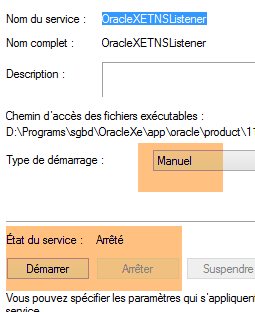 |  |
Deux services doivent être démarrés :
- [OracleXETNSListener] qui écoute sur le port 1521 les demandes faites au SGBD ;
- [OracleServiceXE] qui est le SGBD ;
Pour administrer Oracle, on va utiliser le client [OraManager] (paragraphe 23.5). Pour qu'il soit utilisable, il faut auparavant installer la suite [Oracle Database Express Edition 11g Release 2 Client] disponible à l'URL (juin 2015) : [http://www.oracle.com/technetwork/database/enterprise-edition/downloads/112010-win32soft-098987.html]. Il faut télécharger la version 32 bits car [OraManager] est un client 32 bits :
L'installation de cette suite se fait de la façon suivante :
- en [3], indiquez le dossier <oracleXE-install>\app\oracle\product\11.2.0\client_1 où <oracleXE-install> est le dossier où vous avez installé Oracle Express ;
Maintenant, connectons le client [OraManager] au SGBD Oracle :
- en [2], le nom du groupe est libre ;
- en [4], mettre obligatoirement XE ;
- en [5], l'alias est libre ;
- en [6], les identifiants sont [system / system] ;
23.7. Installation du SGBD PostgreSQL 9.4
Le SGBD PostgreSQL 9.4 est disponible à l'URL (juin 2015) : [http://www.enterprisedb.com/products-services-training/pgdownload#windows] :
L'installation se déroule de la façon suivante :
- en [4], le mot de passe est postgres. Dans ce document, les identifiants de l'administrateur du SGBD PostgreSQL sont [postgres / postgres] ;
L'installation installe PostgreSQL comme un service windows avec démarrage automatique. La première chose à faire est de le passer en mode manuel :
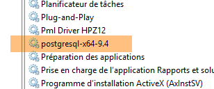 |  |
Maintenant connectons le client [PgManager] (cf paragraphe 23.5) au SGBD PostgreSQL :
- en [2], les identifiants sont [postgres / postgres] ;
- en [3], on se connecte à la base [postgres] ;
23.8. Installation du SGBD DB2 Express
Le SGBD DB2 Express est disponible à l'URL (juin 2015) : [http://www-01.ibm.com/software/data/db2/express-c/download.html] :
L'installation se déroule de la façon suivante :
- en [9] le mot de passe est [db2admin]. Dans ce document, les identifiants de l'administrateur du SGBD est [db2admin / db2admin] ;
Note : on peut être tenté de sauter cette étape. Il ne faut pas. Elle va créer le dossier où seront stockées les bases de données DB2 que nous allons créer.
- un dossier [d:\DB2] a été créé [1] ;
- la base de données [SAMPLE] a été créée dans le dossier [d:\db2\node0000] ;
L'installation installe DB2 comme un service windows avec démarrage automatique. La première chose à faire est de le passer en mode manuel :
Le faire pour tous les services [DB2*] ci-dessus. Seul le service [DB2 - DB2COPY1] a besoin d'être lancé pour les besoins de ce document.
Maintenant connectons le client [Db2Manager] (cf paragraphe 23.5) au SGBD DB2 :
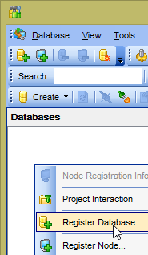 |  |
- en [1], utiliser les identifiants [db2admin / db2admin] ;
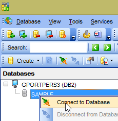 | 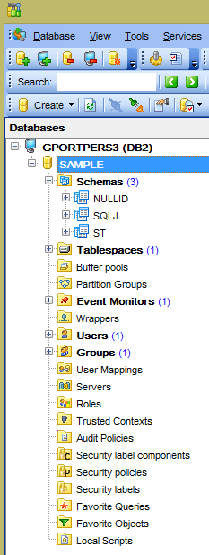 |
23.9. Installation du SGBD SQL Server 2014 Express
Le SGBD SQL Server 2014 Express est disponible à l'URL (juin 2015) : [http://www.microsoft.com/fr-fr/server-cloud/products/sql-server/] :
L'installation se déroule de la façon suivante :
- en [1], mettre un mot de passe quelconque. Nous allons le changer ultérieurement ;
Ensuite, nous lançons le service de SQL Server :
 | 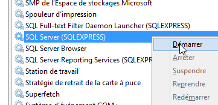 |
Ceci fait, on lance le client [Microsoft SQL Server Management Studio] qui a été installé en même temps que le SGBD (cf Menu Démarrer) :
On pourrait utiliser ce client pour administrer SQL Server. Mais par souci d'homogénéité avec les clients des autres SGBD, nous utiliserons le client [MsManager] (cf paragraphe 23.5).
- en [1], notez le nom du SGBD ;
- en [2], on a mis le mot de passe msde. Dans ce document, les identifiants de l'administrateur du SGBD sont [sa / msde] ;
Ceci fait, on lance l'outil [Gestionaire de configuration SQL Server] qui a été installé en même temps que le SGBD (cf Menu Démarrer) :
- par défaut, en [2], la communication TCP/IP n'est pas activée. Pour ce document, il faut l'activer [3] ;
- en [4], toujours pour les besoins de ce document, il faut indiquer que le SGBD attend les demandes des clients sur le port 1433. La valeur de [Ports TCP dynamiques] doit être vide ;
Ceci fait, on lance le client [MsManager] (cf paragraphe 23.5) :
- en [3], mettez le nom noté en [1] ;
- en [4], les identifiants sont [sa / msde] ;
23.10. Installation du SGBD Firebird
Le SGBD Firebird 2.5.4 est disponible à l'URL (juin 2015) : [http://www.firebirdsql.org/en/firebird-2-5-4/] :
L'installation se déroule de la façon suivante :
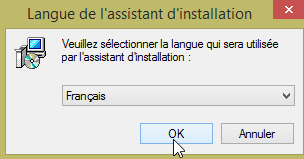 |  |
 | 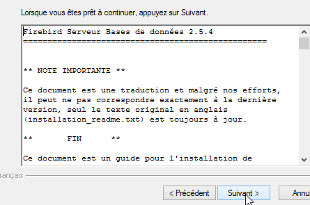 |
 | 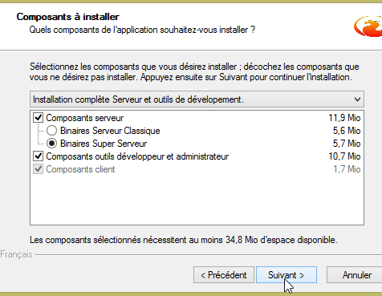 |
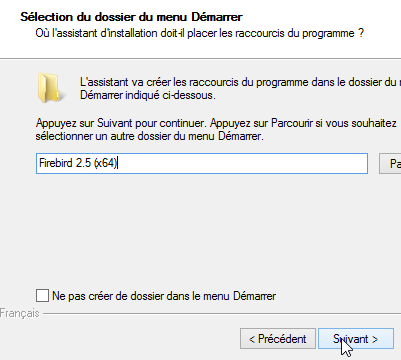 | 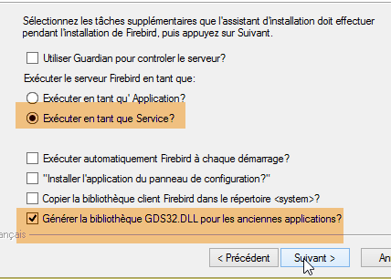 |
Ceci fait, vérifions le mode de lancement du service windows créé :
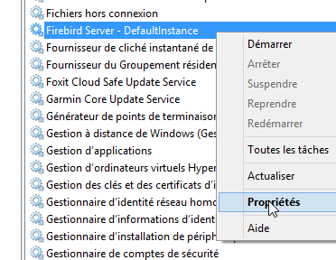 |  |
Connectons maintenant le client [IBManager] (cf paragraphe 23.5) au SGBD Firebird installé :
- en [1], le mot de passe est masterkey ;
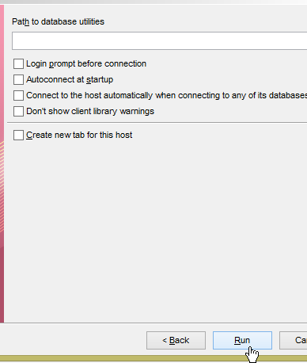 | 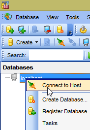 |  |
23.11. Installation du plugin Chrome [Advanced Rest Client]
Dans ce document, on utilise le navigateur Chrome de Google (http://www.google.fr/intl/fr/chrome/browser/ ). On lui ajoutera l'extension [Advanced Rest Client]. On pourra procéder ainsi :
- l'application est alors disponible au téléchargement :
- pour l'obtenir, il vous faudra créer un compte Google. [Google Web Store] demande ensuite confirmation [1] :
- en [2], l'extension ajoutée est disponible dans l'option [Applications] [3]. Cette option est affichée sur chaque nouvel onglet que vous créez (CTRL-T) dans le navigateur.
23.12. Gestion du jSON en Java
De façon transparente pour le développeur le framework [Spring MVC] utilise la bibliothèque jSON [Jackson]. Pour illustrer ce qu'est le jSON (JavaScript Object Notation), nous présentons ici un programme qui sérialise des objets en jSON et fait l'inverse en désérialisant les chaînes jSON produites pour recréer les objets initiaux.
La bibliothèque 'Jackson' permet de construire :
- la chaîne jSON d'un objet : new ObjectMapper().writeValueAsString(object) ;
- un objet à partir d'un chaîne jSON : new ObjectMapper().readValue(jsonString, Object.class).
Les deux méthodes sont susceptibles de lancer une exception. Voici un exemple.
Le projet ci-dessus est un projet Maven avec le fichier [pom.xml] suivant ;
<?xml version="1.0" encoding="UTF-8"?>
<project xmlns="http://maven.apache.org/POM/4.0.0"
xmlns:xsi="http://www.w3.org/2001/XMLSchema-instance"
xsi:schemaLocation="http://maven.apache.org/POM/4.0.0 http://maven.apache.org/xsd/maven-4.0.0.xsd">
<modelVersion>4.0.0</modelVersion>
<groupId>istia.st.pam</groupId>
<artifactId>json</artifactId>
<version>1.0-SNAPSHOT</version>
<dependencies>
<dependency>
<groupId>com.fasterxml.jackson.core</groupId>
<artifactId>jackson-databind</artifactId>
<version>2.3.3</version>
</dependency>
</dependencies>
</project>
- lignes 12-16 : la dépendance qui amène la bibliothèque 'Jackson' ;
La classe [Personne] est la suivante :
package istia.st.json;
public class Personne {
// data
private String nom;
private String prenom;
private int age;
// constructeurs
public Personne() {
}
public Personne(String nom, String prénom, int âge) {
this.nom = nom;
this.prenom = prénom;
this.age = âge;
}
// signature
public String toString() {
return String.format("Personne[%s, %s, %d]", nom, prenom, age);
}
// getters et setters
...
}
La classe [Main] est la suivante :
package istia.st.json;
import com.fasterxml.jackson.databind.ObjectMapper;
import java.io.IOException;
import java.util.HashMap;
import java.util.Map;
public class Main {
// l'outil de sérialisation / désérialisation
static ObjectMapper mapper = new ObjectMapper();
public static void main(String[] args) throws IOException {
// création d'une personne
Personne paul = new Personne("Denis", "Paul", 40);
// affichage jSON
String json = mapper.writeValueAsString(paul);
System.out.println("Json=" + json);
// instanciation Personne à partir du Json
Personne p = mapper.readValue(json, Personne.class);
// affichage personne
System.out.println("Personne=" + p);
// un tableau
Personne virginie = new Personne("Radot", "Virginie", 20);
Personne[] personnes = new Personne[]{paul, virginie};
// affichage Json
json = mapper.writeValueAsString(personnes);
System.out.println("Json personnes=" + json);
// dictionnaire
Map<String, Personne> hpersonnes = new HashMap<String, Personne>();
hpersonnes.put("1", paul);
hpersonnes.put("2", virginie);
// affichage Json
json = mapper.writeValueAsString(hpersonnes);
System.out.println("Json hpersonnes=" + json);
}
}
L'exécution de cette classe produit l'affichage écran suivant :
| Json={"nom":"Denis","prenom":"Paul","age":40}
Personne=Personne[Denis, Paul, 40]
Json personnes=[{"nom":"Denis","prenom":"Paul","age":40},{"nom":"Radot","prenom":"Virginie","age":20}]
Json hpersonnes={"2":{"nom":"Radot","prenom":"Virginie","age":20},"1":{"nom":"Denis","prenom":"Paul","age":40}}
|
De l'exemple on retiendra :
- l'objet [ObjectMapper] nécessaire aux transformations jSON / Object : ligne 11 ;
- la transformation [Personne] --> jSON : ligne 17 ;
- la transformation jSON --> [Personne] : ligne 20 ;
- l'exception [IOException] lancée par les deux méthodes : ligne 13.